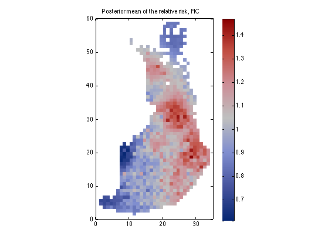
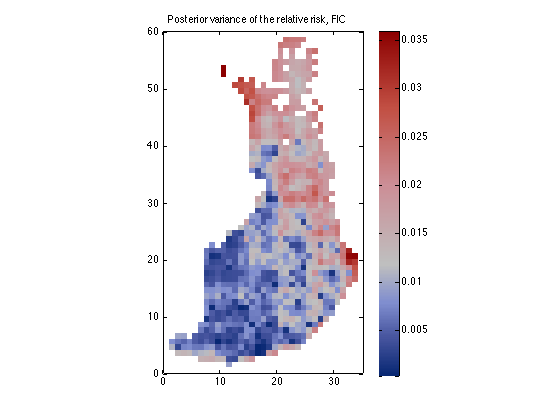

%PMTKauthor Jarno Vanhatalo % Same as demo_spatial1 from GPstuff-2.0 except % we only run Laplace, not MCMC, for speed %DEMO_SPATIAL1 Demonstration for a disease mapping problem % with Gaussian process prior and Poisson likelihood % % Description % The disease mapping problem consist of a data with number of % death cases, Y, and background population, N, appointed to % co-ordinates, X. The goal is to find a relative risk surface, % which describes if the number of death cases in certain areas is % lower or higher than expected. The data consists of the heart % attacks in Finland from 1996-2000 aggregated into 20kmx20km % lattice cells. % % The model constructed is as follows: % % The number of death cases Y_i in area i is assumed to satisfy % % Y_i ~ Poisson(Y_i| E_i * r_i) % % where E_i is the expected number of deaths (see Vanhatalo and % Vehtari (2007, 2010), how E_i is evaluated) at area i and r_i is % the relative risk. % % We place a zero mean Gaussian process prior for log(R), R = [r_1, % r_2,...,r_n], which implies that at the observed input locations % latent values, f, have prior % % f = log(R) ~ N(0, K), % % where K is the covariance matrix, whose elements are given as % K_ij = k(x_i, x_j | th). The function k(x_i, x_j | th) is % covariance function and th its parameters, hyperparameters. We % place a hyperprior for hyperparameters, p(th). % % Since the data set used in this demo is rather large we use FIC % sparse approximation for the GP prior. % % The inference is conducted first with Laplace approximation and % then via MCMC. We sample from the full posterior p(f, th| data) % by alternating the sampling from the conditional posteriors p(f | % th, data) and p(th | f, data). The sampling from the conditional % posteriors is done by hybrid Monte Carlo (see, for example, Neal, % 1996). % % See Vanhatalo and Vehtari (2007) and Vanhatalo et.al. (2010) for % more detailed discussion. % % This demo is organised in three parts: % 1) data analysis with Laplace approximation % 2) data analysis with integrated Laplace approximation % 3) data analysis with MCMC % % See also DEMO_REGRESSION1, DEMO_CLASSIFIC1 % % % Refernces: % Vanhatalo, J., Pietiläinen V. and Vehtari, A. (2010). Approximate % inference for disease mapping with sparse Gaussian processes. % Statistics in Medicine, 29(15):. % % Jarno Vanhatalo and Aki Vehtari (2007). Sparse Log Gaussian % Processes via MCMC for Spatial Epidemiology. JMLR Workshop and % Conference Proceedings, 1:73-89. (Gaussian Processes in Practice) % Copyright (c) 2008-2010 Jarno Vanhatalo % This software is distributed under the GNU General Public % License (version 2 or later); please refer to the file % License.txt, included with the software, for details. % ===================================== % 1) Laplace approximation % ===================================== % load the data S = which('demo_spatial1'); data = load(strrep(S,'demo_spatial1.m','demos/spatial1.txt')); xx = data(:,1:2); ye = data(:,3); yy = data(:,4); % Now we have loaded the following parameters % xx = co-ordinates % yy = number of deaths % ye = the expexted number of deaths % Set the inducing inputs in a regular grid. Set_PIC returns the % induving inputs and blockindeces for PIC. It also plots the data % points, inducing inputs and blocks. dims = [1 60 1 35]; [trindex, Xu] = set_PIC(xx, dims, 5, 'corners', 0); [n,nin] = size(xx); % Create the covariance functions gpcf1 = gpcf_matern32('init', 'lengthScale', 5, 'magnSigma2', 0.05); pl = prior_t('init'); pm = prior_t('init', 's2', 0.3); gpcf1 = gpcf_matern32('set', gpcf1, 'lengthScale_prior', pl, 'magnSigma2_prior', pm); % Create the likelihood structure likelih = likelih_poisson('init'); % Create the FIC GP data structure so that inducing inputs are not optimized gp = gp_init('init', 'FIC', likelih, {gpcf1}, [], 'X_u', Xu, 'jitterSigma2', 0.001); gp = gp_init('set', gp, 'infer_params', 'covariance'); % --- MAP estimate with Laplace approximation --- % Set the approximate inference method to Laplace approximation gp = gp_init('set', gp, 'latent_method', {'Laplace', xx, yy, 'z', ye}); w=gp_pak(gp); % pack the hyperparameters into one vector fe=str2fun('gpla_e'); % create a function handle to negative log posterior fg=str2fun('gpla_g'); % create a function handle to gradient of negative log posterior % set the options for scg2 opt = scg2_opt; opt.tolfun = 1e-3; opt.tolx = 1e-3; opt.display = 1; % do the optimization and set the optimized hyperparameter values back to the gp structure w=scg2(fe, w, opt, fg, gp, xx, yy, 'z', ye); gp=gp_unpak(gp,w); % make prediction to the data points [Ef, Varf] = la_pred(gp, xx, yy, xx, 'z', ye, 'tstind', [1:n]); % Define help parameters for plotting xxii=sub2ind([60 35],xx(:,2),xx(:,1)); [X1,X2]=meshgrid(1:35,1:60); % Plot the figures % In the results it should be noticed that: % - there is much more people living in the south than in the north. % This results in rather high variance in the north % - The eastern Finland is known to be worse than western Finland in % heart diseases also from other studies. % - The inducing inputs are set slightly too sparsely for this data, % which results in oversmoothness in the maps figure G=repmat(NaN,size(X1)); G(xxii)=exp(Ef); pcolor(X1,X2,G),shading flat colormap(mapcolor(G)),colorbar %set(gca, 'Clim', [0.6 1.5]) axis equal axis([0 35 0 60]) title('Posterior mean of the relative risk, FIC') printPmtkFigure('gpSpatialDemoLaplaceMean') figure G=repmat(NaN,size(X1)); G(xxii)=(exp(Varf) - 1).*exp(2*Ef+Varf); pcolor(X1,X2,G),shading flat colormap(mapcolor(G)),colorbar %set(gca, 'Clim', [0.005 0.03]) axis equal axis([0 35 0 60]) title('Posterior variance of the relative risk, FIC') printPmtkFigure('gpSpatialDemoLaplaceVar') % the MAP estimate of the hyperparameters in kilometers. Notice that the % co-ordinates in the data are not in kilometers. x=1 corresponds to 20km % in real life S2 = sprintf('lengt-scale: %.3f, magnSigma2: %.3f \n', gp.cf{1}.lengthScale, gp.cf{1}.magnSigma2) %{ % --- MCMC --- % Set the approximate inference method to MCMC gp = gp_init('set', gp, 'latent_method', {'MCMC', zeros(size(yy))', @scaled_hmc}); % Set the sampling options % HMC-hyper hmc_opt.steps=3; hmc_opt.stepadj=0.01; hmc_opt.nsamples=1; hmc_opt.persistence=0; hmc_opt.decay=0.8; % HMC-latent latent_opt.nsamples=1; latent_opt.nomit=0; latent_opt.persistence=0; latent_opt.repeat=20; latent_opt.steps=20; latent_opt.stepadj=0.15; latent_opt.window=5; % Here we make an initialization with % slow sampling parameters [rgp,gp,opt]=gp_mc(gp, xx, yy, 'z', ye, 'hmc_opt', hmc_opt, 'latent_opt', latent_opt); % Now we reset the sampling parameters to % achieve faster sampling opt.latent_opt.repeat=1; opt.latent_opt.steps=7; opt.latent_opt.window=1; opt.latent_opt.stepadj=0.15; opt.hmc_opt.persistence=0; opt.hmc_opt.stepadj=0.01; opt.hmc_opt.steps=2; opt.display = 1; opt.hmc_opt.display = 0; opt.latent_opt.display=0; % Define help parameters for plotting xxii=sub2ind([60 35],xx(:,2),xx(:,1)); [X1,X2]=meshgrid(1:35,1:60); % Conduct the actual sampling. % Inside the loop we sample one sample from the latent values and % hyper-parameters at each iteration. After that we plot the samples % so that we can visually inspect the progress of sampling while length(rgp.edata)<1000 % 1000 [rgp,gp,opt]=gp_mc(gp, xx, yy, 'record', rgp, 'z', ye, opt); fprintf(' mean hmcrej: %.2f latrej: %.2f\n', mean(rgp.hmcrejects), mean(rgp.lrejects)) figure(3) clf subplot(1,2,1) plot(rgp.cf{1}.lengthScale, rgp.cf{1}.magnSigma2) xlabel('lenght-scale') ylabel('magnitude') hold on plot(rgp.cf{1}.lengthScale(end), rgp.cf{1}.magnSigma2(end),'r*') drawnow % subplot(2,2,[2 4]) subplot(1,2,2) G=repmat(NaN,size(X1)); G(xxii)=exp(gp.latentValues); pcolor(X1,X2,G),shading flat colormap(mapcolor(G)),colorbar axis equal axis([0 35 0 60]) title('relative risk') drawnow end figure(3) clf G=repmat(NaN,size(X1)); G(xxii)=median(exp(rgp.latentValues)); pcolor(X1,X2,G),shading flat colormap(mapcolor(G)),colorbar set(gca, 'Clim', [0.6 1.5]) axis equal axis([0 35 0 60]) title('Posterior median of relative risk, FIC GP') figure(4) G=repmat(NaN,size(X1)); G(xxii)=std(exp(rgp.latentValues), [], 1).^2; pcolor(X1,X2,G),shading flat colormap(mapcolor(G)),colorbar set(gca, 'Clim', [0.005 0.03]) axis equal axis([0 35 0 60]) title('Posterior variance of relative risk, FIC GP') %}
Cycle 1 Error 2697.954880 Scale 1.000000e+00 Cycle 2 Error 2697.656280 Scale 5.000000e-01 Cycle 3 Error 2697.656274 Scale 2.500000e-01 Tolx and tolfun reached S2 = lengt-scale: 4.457, magnSigma2: 0.037 